4.2.3 载波跟踪环
说明：这一版不改写教材正文，直接把教材
4.2.3的原页完整截出，保留公式、插图和版式，方便后续拼接进个人电子教材。
HTML 发布路径：site/notes/tracking/chapter-4-2-3-carrier-tracking/index.html
一、截取说明
1. 截取范围
- 章节标题：
4.2.3 载波跟踪环 - 原 PDF 物理页：第
59页到第69页 - 教材页码：第
175页到第185页 - 截止位置：到
4.2.4 伪码跟踪环开始前为止
2. 导出文件
- 站点发布用 PDF：
assets/pdf/chapter-4-2-3-carrier-tracking.pdf - 站点发布用高清页图：
assets/pages/page-059.png到assets/pages/page-069.png - 章节笔记目录归档 PDF：
chapters/第04章_信号捕获和跟踪/笔记/4.2.3 载波跟踪环（教材原页截取）.pdf
二、教材原页
第 175 页（4.2.3 起始页）
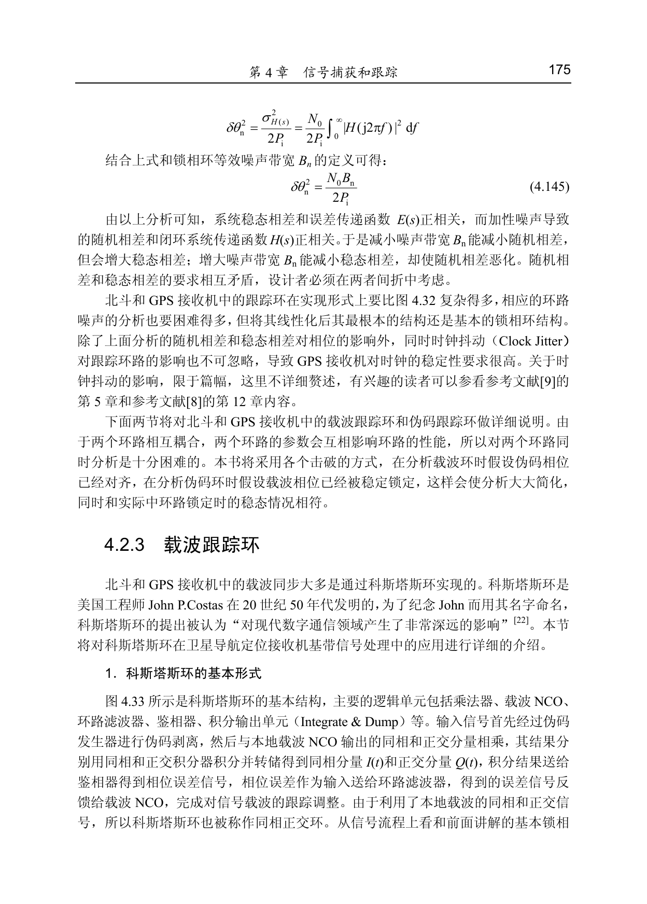
第 176 页
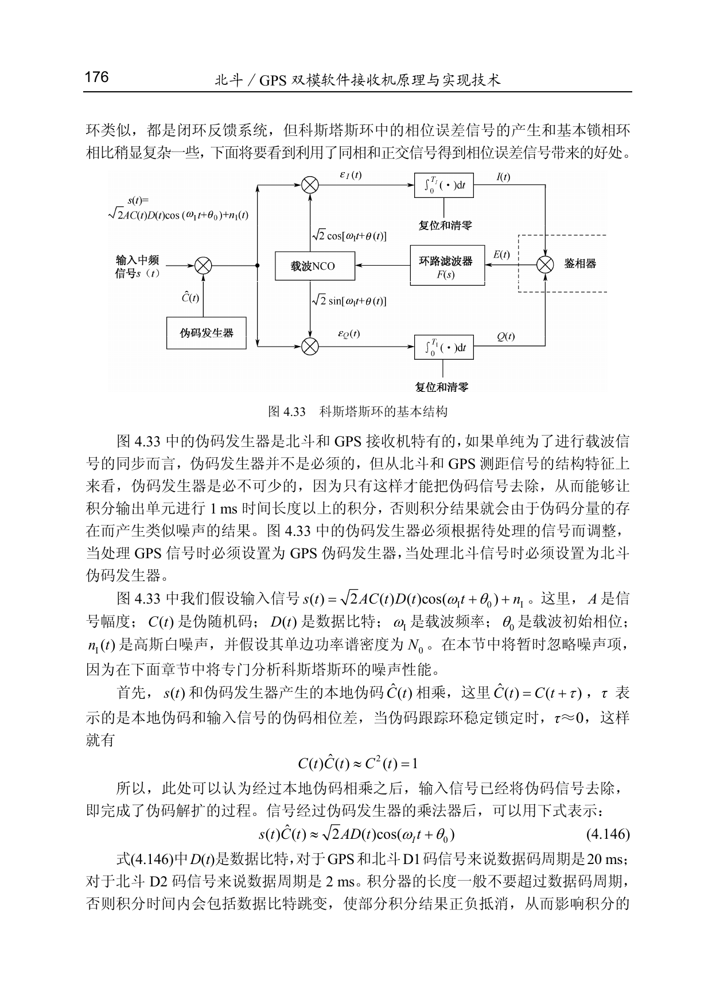
第 177 页
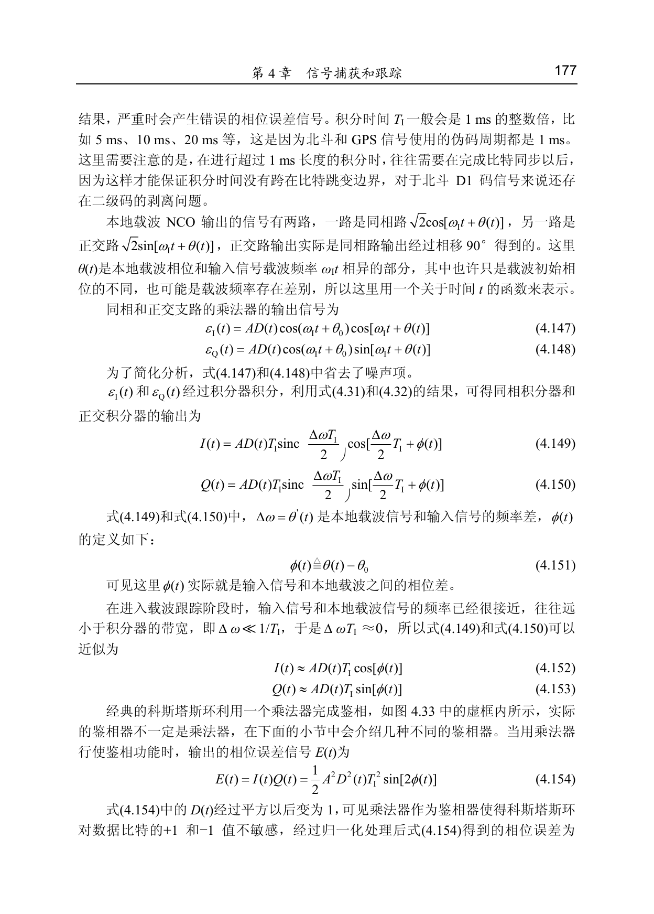
第 178 页
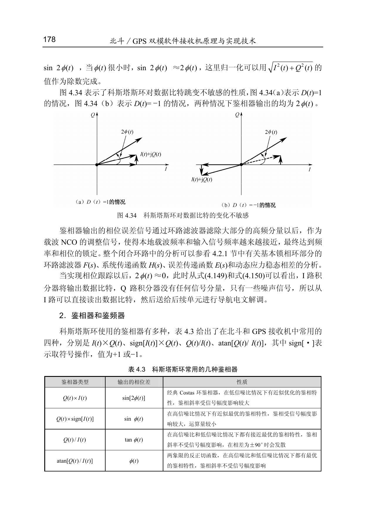
第 179 页
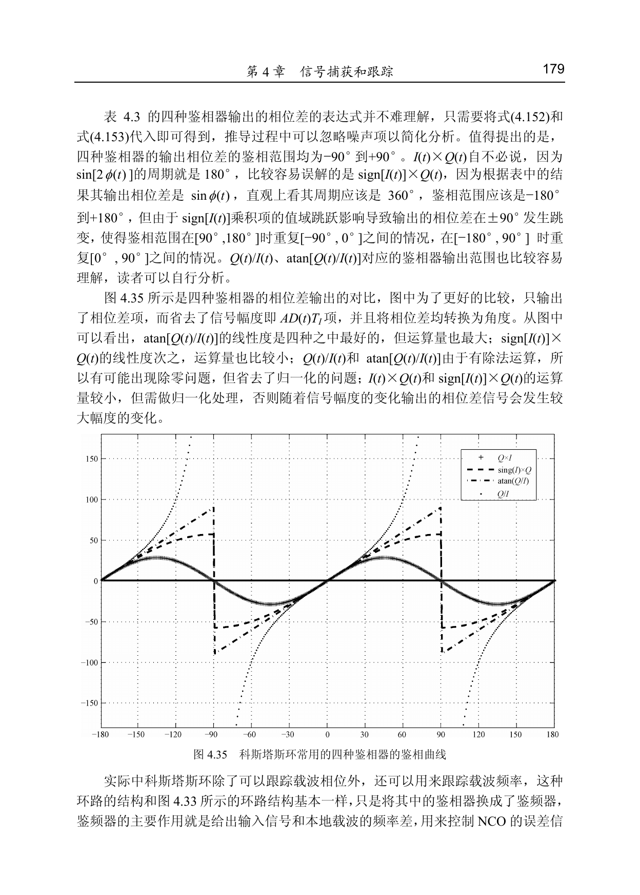
第 180 页
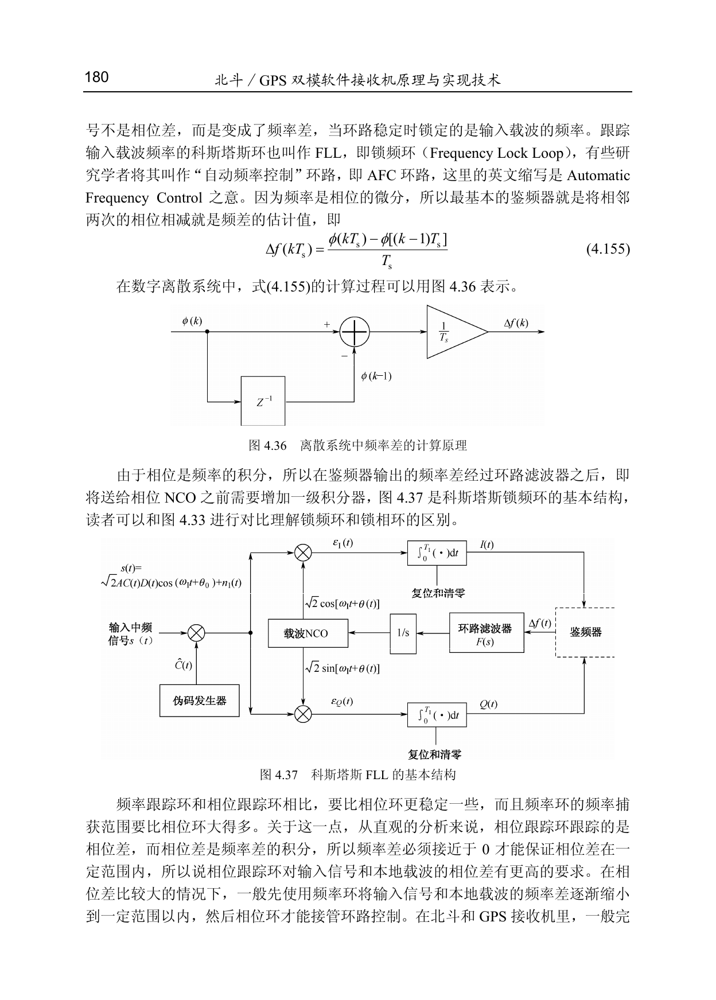
第 181 页
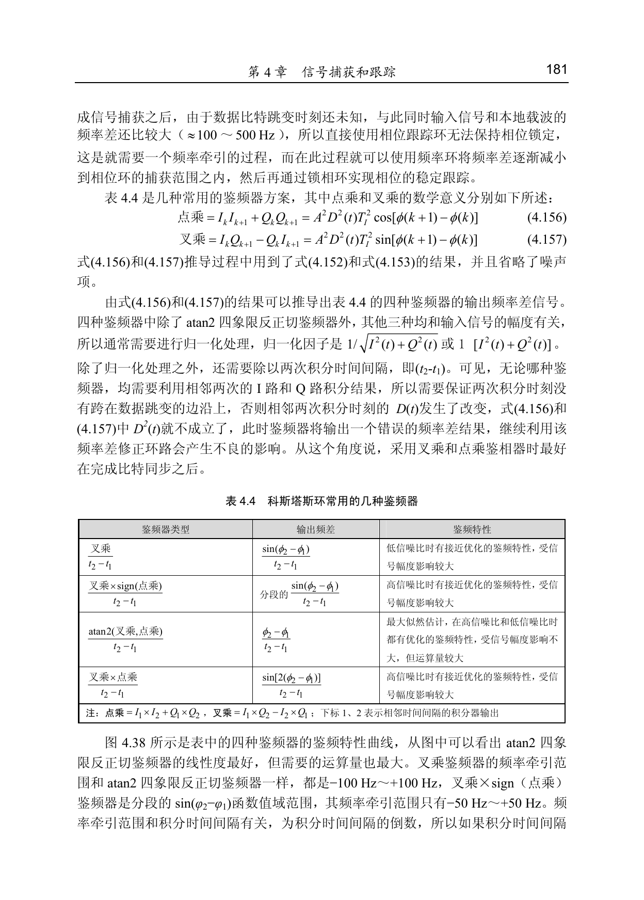
第 182 页
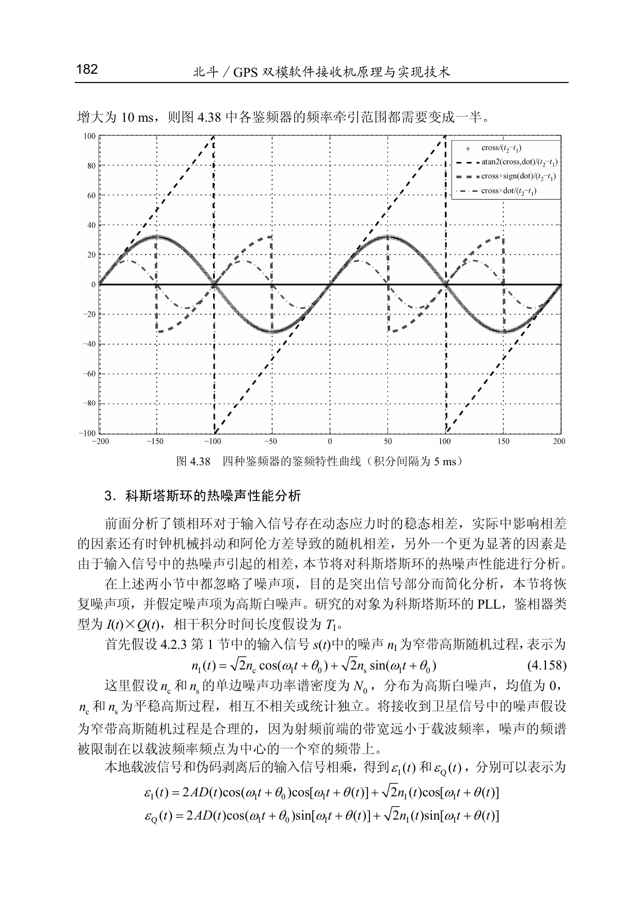
第 183 页
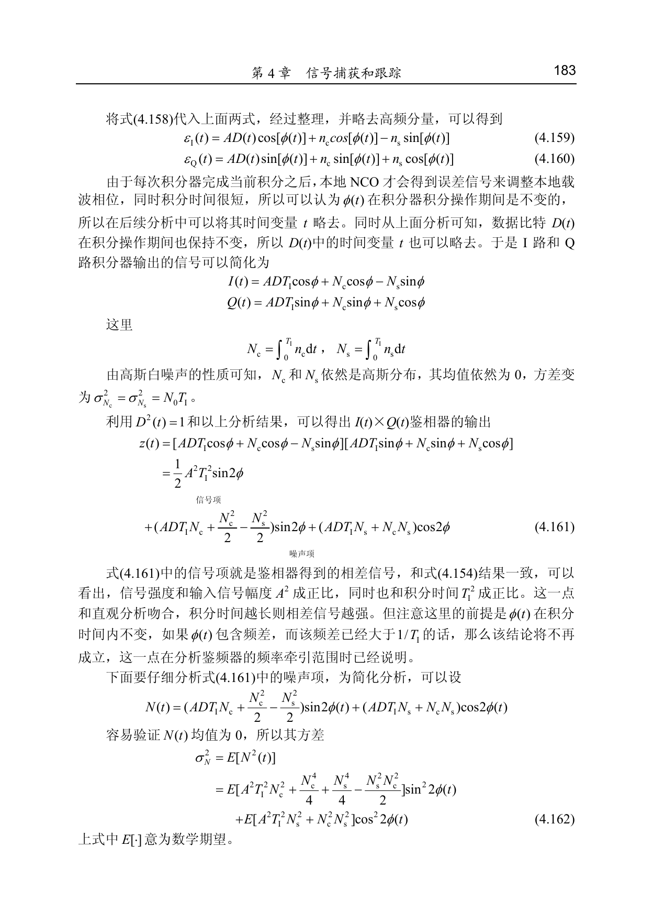
第 184 页
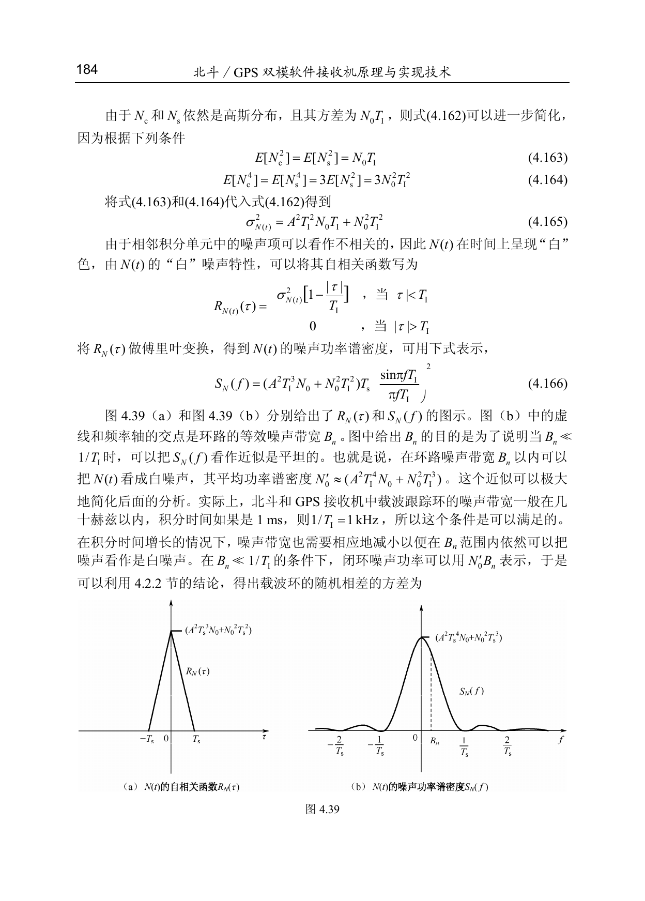
第 185 页（4.2.3 结束页）
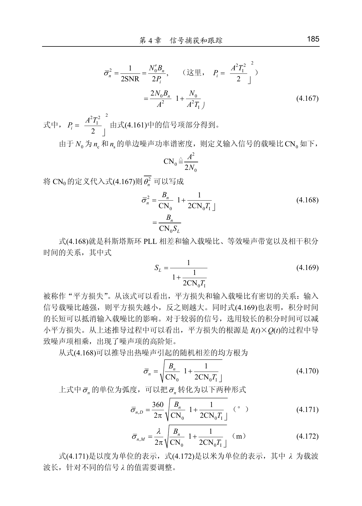
三、发布说明
- Markdown 源笔记：
chapters/第04章_信号捕获和跟踪/笔记/4.2.3 载波跟踪环.md - HTML 发布页：
site/notes/tracking/chapter-4-2-3-carrier-tracking/index.html - 章节原页截取 PDF：
chapters/第04章_信号捕获和跟踪/笔记/4.2.3 载波跟踪环（教材原页截取）.pdf